Seminar-Leitfaden
Seminar-Leitfaden
Seminar-Leitfaden
The Gymnastics Course
Teilnehmerhandbuch

Ausgabe 2026
© 2026 BirdBox Coaching Limited. Alle Rechte vorbehalten.
Kein Teil dieses Handbuchs darf ohne schriftliche Genehmigung kopiert oder weitergegeben werden.
BirdBox Coaching Limited · 19 Baggot Street Lower, Dublin 2, D02 X658, Ireland
birdboxcoaching.com
Kapitel 1
The Gymnastics Course ist ein Seminar für Coaches Development – eine professionelle Weiterentwicklung für Coaches und Athleten. Der Kurs wird seit über einem Jahrzehnt von einem weltweiten Experten-Team geleitet und stetig weiterentwickelt. Wir wollen einen Beitrag dazu leisten, das Potenzial von professionellen Trainern, Coaches, Athleten und Gym-Besitzern zu wecken und auszuschöpfen. Unser Ziel ist es, die methodische Vorgehensweise des Turnens zu nutzen, um das Training und Coaching zu optimieren.

Dieses Handbuch ist ein Leitfaden für das Live-Seminar. Bitte beachte, dass das Dokument nicht alle in unserem Kurs besprochenen Elemente enthält. Das Handbuch soll Dir das Lernen erleichtern und als Gedankenstütze, für Dein Training & Coaching nach dem Seminar, dienen.
Wenn Du die Inhalte des Live-Seminars noch vertiefen möchtest, empfehlen wir Dir unseren Online-Kurs. Hier hast Du die Möglichkeit, im Rahmen eines Selbststudiums, alle Themenschwerpunkte in einem interaktiven Umfeld, mit Videos, weiterführende Literatur und Lernproben, erneut zu bearbeiten. Wir gewähren allen Teilnehmern eines Live-Seminars einen erheblichen Preisnachlass, um eine tiefgreifende und abgerundete Lernerfahrung zu ermöglichen. Das folgende Handbuch enthält Bilder und Erklärungen zu den elementaren Inhalten dieses Seminars.
Im Handbuch gibt es Platz für Deine eigenen Notizen, die Du im Laufe des Kurses hinzufügen kannst.
Kapitel 2
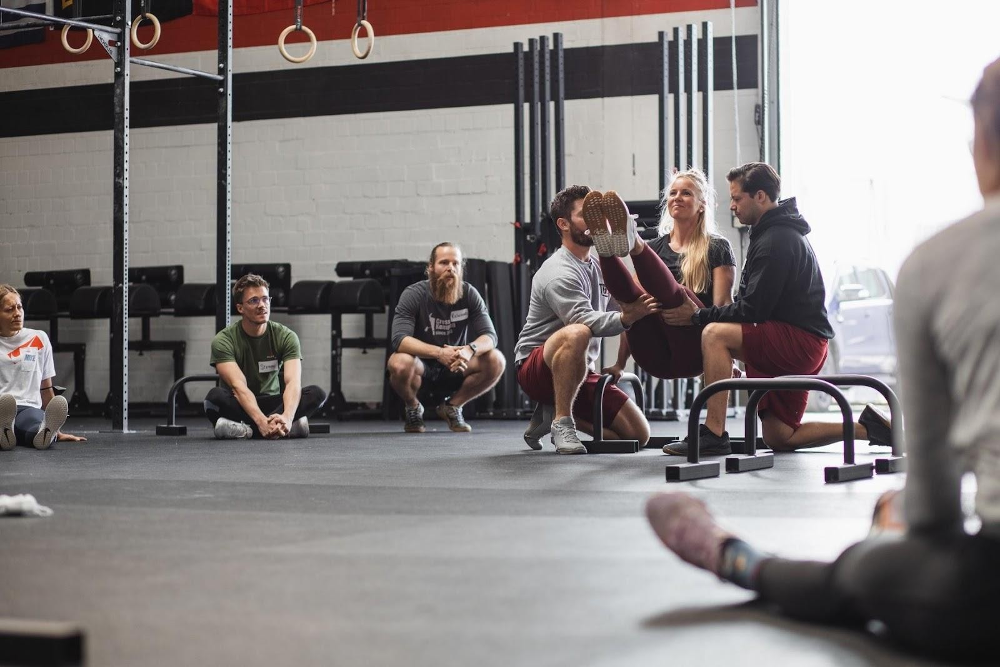
Kapitel 3
Athlet – ein Athlet ist jemand, der die Fähigkeit besitzt, sich mit anderen zu messen und zu gewinnen. Ein relativer Indikator für einen Athleten wäre ein Wettkampf auf höchstem Niveau seiner Sportart oder eine Top-5-Platzierung bei einem nationalen oder internationalen Wettkampf.
Bedarfsanalyse – die Bedarfsanalyse ist ein formaler, systematischer Prozess zur Identifizierung und Bewertung des Trainings, das durchgeführt werden sollte, um einen Athleten in Bezug auf die Anforderungen seines Sports, seines Lebens oder seiner Verletzung zu fördern.
Regeln – Regeln basieren auf Prinzipien und sind vorgeschlagene Standards, die dabei helfen, einen Athleten zu korrigieren und sicher weiterzuentwickeln. Eine Regel kann von dem Athleten selbst oder dem Coach gebrochen werden.
Gesetze – ein Gesetz ist eine viel strengere Regel, an die man sich unbedingt halten muss. Das Gesetz zu brechen ist keine Option, da diese durch die Wissenschaft eingeschränkt wird. Zum Beispiel können Newtons Gravitationsgesetze nicht geändert oder gebrochen werden.
Virtuosität – Virtuosität wird im Turnen als „das Gewöhnliche ungewöhnlich gut ausführen“ definiert. (Greg Glassman, 2005)
Mastery – Mastery ist die Beherrschung einer Bewegung und wird definiert als „die Verbesserung der Fähigkeit eines Sportlers, sein motorisches Potenzial effektiv zu nutzen“ (BirdBox Coaching, 2020)
Aktive Muskelmasse – aktive Muskelmasse bedeutet, dass wir die Fähigkeit haben, Muskeln zu kontrahieren, die dabei helfen, die Form als Ganzes aufrechtzuerhalten. Ziel ist es, eine möglichst feste Einheit zu bilden.
Hollow – die Hollow Position ist die Basis für alle turnerischen Elemente und dient dazu, Stabilität zu schaffen. Sie ist gekennzeichnet durch eine starke Kontraktion des Cores und maximaler aktiver Muskelmasse von den Zehen bis zu den Fingerspitzen. Hollow ist immer eine gerade Linie von Rippenbogen bis Zehenspitze. Der Rippenbogen ist geschlossen und das Becken befindet sich in einer posterioren Position.
“Strict” – Bewegung ohne Kippbewegung. Der Athlet verlässt sich auf Muskelkontrolle und Kraft, um die Bewegung auszuführen.
Kipp – eine aggressive Richtungsänderung bei hoher Geschwindigkeit, die zu einer Änderung der Ebene oder Position führt, um ein Bewegungsmuster zu erreichen.
Form – die Art und Weise oder Methode, eine Bewegung korrekt auszuführen, wobei Perfektion angestrebt wird.
Statisches Gerät – Stabil und unbeweglich (Boden und Barren).
Dynamisches Gerät – Instabil und beweglich (Ringe).
Beweglichkeit (“Mobility”) – Bewegungsamplitude um ein Gelenk.
Aktive Beweglichkeit (“Flexibility“) – Kontraktion der entgegengesetzten Muskeln, um eine Position zu dehnen oder zu halten.
Passive Beweglichkeit („Flexibility“) – Dehnung eines Muskels, die keine Kontraktion der gegenüberliegenden Muskeln erfordert.
ROM – Bewegungsumfang.
EROM – erweiterter Bewegungsumfang.
Hilfestellung (“Spotting“) – Unterstützung eines Sportlers bei Bedarf als Teil einer Progression oder zur Vermeidung von Verletzungen.
Spannung – das Wort „Spannung“ kann als „Zustand der Anspannung“ definiert werden, während das Gegenteil „Schlaffheit“ oder „Lockerheit“ ist (Fowler & Crystal, 2010).

Kapitel 4
Wir von The Gymnastics Course betonen, dass CrossFit ein grundlegendes Kraft- und Konditionstrainingsprogramm (Core Strength & Conditioning Programm) ist.
Wenn wir mit einem Athleten oder Kunden arbeiten, sollten wir daher eine Bedarfsanalyse durchführen. Wir müssen die Bedürfnisse und Anforderungen eines Athleten, seiner Sportart oder seines Lebens verstehen und sein Trainingsprogramm auf die Diskrepanzen zwischen diesen beiden Bereichen abstimmen.
Das Turnen umfasst nur Übungen und Bewegungen mit dem eigenen Körper. Anders ausgedrückt, wir bewegen unseren Körper in Ort und Zeit. Wir theoretisieren, dass wir die Beherrschung des eigenen Körpergewichts (also das Turnen), vor der metabolischen Konditionierung priorisieren müssen. Denn das, die Biomechanik, ist unsere Grundlage für Bewegung. Wenn eine Person eine schlechte Biomechanik (= menschliche Bewegung) hat, kann man davon ausgehen, dass die Fähigkeit, metabolische Konditionierung zu erreichen, nichtig oder verletzungsgefährdet ist.

Kapitel 5
Regel Nr. 1: „Statisch vor dynamisch“
Regel Nr. 2: “Strict vor kip”
Kraft ist die grundlegende Voraussetzung für eine korrekte Ausführung (Form), und eine korrekte Ausführung (Form) ist erforderlich, um den Körper in der Bewegung kontrollieren zu können. Daher liegt der Schwerpunkt beim Turnen eindeutig auf der Kraftentwicklung.
Das Kontrollieren einer Bewegung wird vor allem durch das Ausführen von Bewegungen in Abwesenheit eines Kipps (strict Movement) erreicht. Aus diesem Grund betonen wir das Training von Übungen & Bewegungen in der Abwesenheit einer Kipp-Bewegung. Die dadurch gewonnene Kraft und Körperbeherrschung sind die Mühe wert, und die Verletzungsgefahr wird erheblich reduziert. Bereits kleine Fortschritte machen sich schnell bemerkbar, aber es bedarf Zeit, um eine Bewegung mit voller Bewegungskontrolle ausführen zu können. “You learn them and earn them!”
Um eine Bewegung meistern zu können, benötigen wir ein virtuoses Körperbewusstsein und eine gute Körperbeherrschung. Um diese zu erlangen, müssen wir alle Bewegungen mit optimaler Form ausführen. Hierfür bedarf es der erforderlichen Kraft im gesamten Bewegungsumfang, von Anfang bis Ende einer Bewegung. Fehlt die Kraft – wenn auch nur in einem Teil des Bewegungsumfanges – hat dies negative Auswirkung auf die Position. Dies führt dann dazu, dass Kräfte in falsche Richtungen geleitet werden. Oder es findet keine Aktion statt, da keine oder nicht genügend Kraft vorhanden ist. (Newtonsche Gesetze)
Unser Ziel ist es, die Bewegungen eines Athleten optimal zu entwickeln. Den Trainern möchten wir hierfür eine Herangehensweise an die Hand geben, die es ihnen erlaubt, möglichst effizient zu coachen. Coaching Cues, Coaching Constraints und Coaching Interventionen sind Werkzeuge die wir hierzu nutzen können.
„Kraft ist die Voraussetzung für eine korrekte Form,
und korrekte Form ist Voraussetzung für Körperbewusstsein und -kontrolle“

Regel Nr. 3:
Nutze isometrisches Training, um ein starkes Fundament zu schaffen.
Regel Nr. 4:
Nutze die exzentrische Belastung als Mittel zur Kraft- und Positionsentwicklung.
Isometrische Kontraktionen bedeuten, dass der Muskel bei gleichbleibender Länge unter Belastung oder Spannung steht. Isometrisches Training ist wichtig für die Stabilisierung der Gelenke und die Entwicklung des Bindegewebes.
Unter einer exzentrischen Belastung versteht man eine Kontraktion, bei welcher der Muskel unter Belastung oder Spannung ist. Der Muskel wirkt einer auf ihn wirkenden Kraft entgegen, während er bzw. seine Sarkomere verlängert werden. Die exzentrische Belastung bringt viele Vorteile mit sich, insbesondere die Veränderungen der Muskelarchitektur, die zur Kraftentwicklung führen.
Bei konzentrischen Kontraktionen wird ein Muskel belastet oder angespannt, aber gleichzeitig verkürzt er sich. Im Training führen wir ständig konzentrische Kontraktionen aus. Unser Ziel ist es, die Vorteile der verschiedenen Kontraktionsformen zu nutzen, ohne dabei aber die Risiken aus den Augen zu verlieren. In der Programming Lecture werden die Risiken der verschiedenen Kontraktionsformen erläutert.
Kapitel 6
Coaching-Cues richten sich an den Athleten, um eine Positionsänderung durch verbale Kommunikation herbeizuführen.
Coaching-Constraints sind Übungen, die dazu beitragen, dass eine Position innerhalb einer ausgewählten Bewegung hart erarbeitet wird. Die Bewegung bzw. der Bewegungsumfang wird hier bewusst beschränkt. Es wird jedoch kein Einfluss auf die Entwicklung von Kraft oder Länge eines Muskels genommen.
Coaching-Interventionen werden eingesetzt, wenn Cues und Constraints unwirksam werden. Sie führen zu einer Veränderung der Länge des Muskelgewebes, zur Kraftsteigerung, und zielen somit auf eine Verbesserung der Bewegungen ab.
Während des Live-Seminars werden verschiedene Aspekte von Coaching-Cues, -Constraints und -Interventionen behandelt. Eine Übersicht, wie man effektiv entscheidet, welches Werkzeug am besten anzuwenden ist, siehst du unten.
Kapitel 7
Als Athlet und auch als Trainer ist es wichtig, die Positionen in einer Bewegung zu verstehen. Hier stellen wir eine Reihe von Bildern vor, die die wichtigsten Positionen für die entsprechenden Bewegungen zeigen.
Je besser wir die Grundpositionen einer Bewegung verstehen und trainieren, desto größer wird die Fähigkeit sein, die Bewegung optimal umzusetzen. Die Performanceleistung steigt und wir reduzieren das Verletzungsrisiko.
Während des Seminars werden wir uns die Positionen und Bewegungen noch sehr viel detaillierter ansehen. Nutze die Notizfelder und ergänze weiter wichtige Informationen während des Kurses.

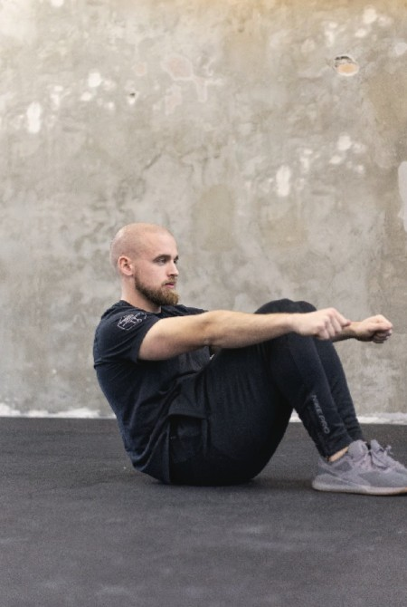


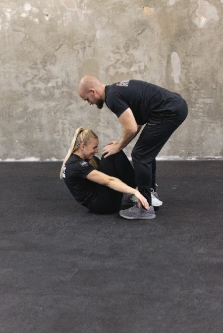

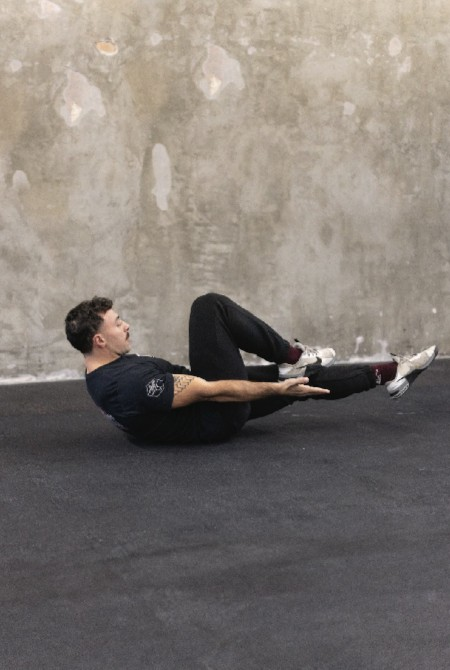


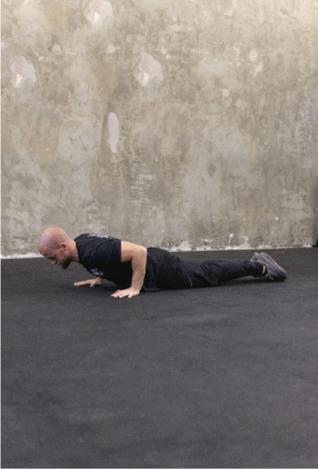


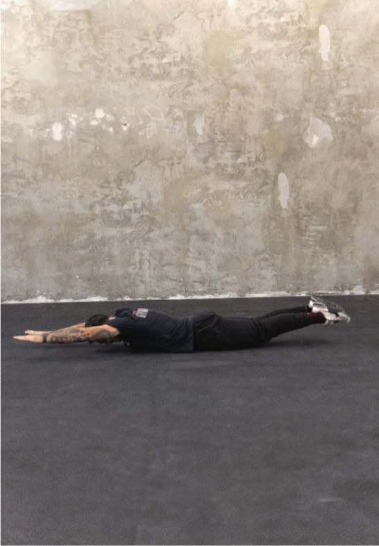

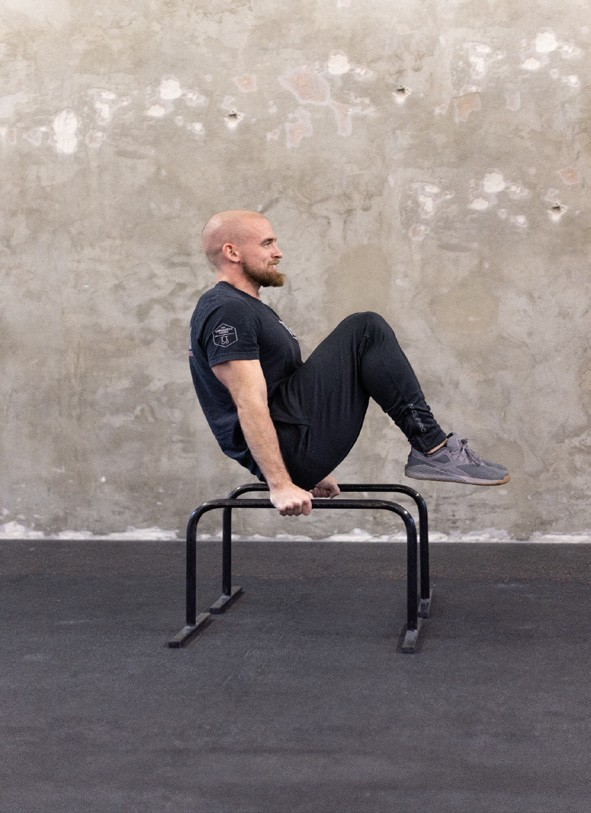
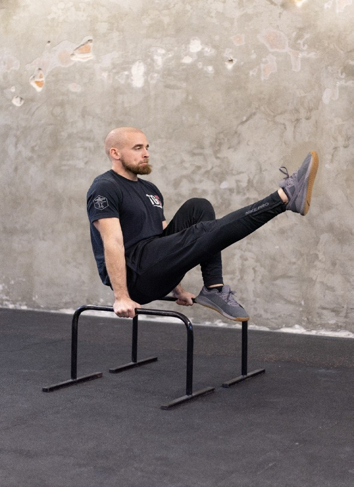


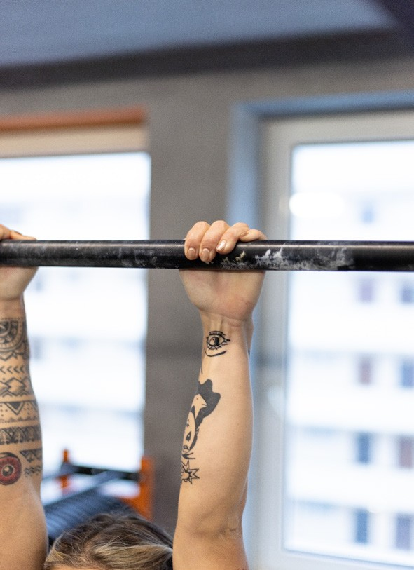
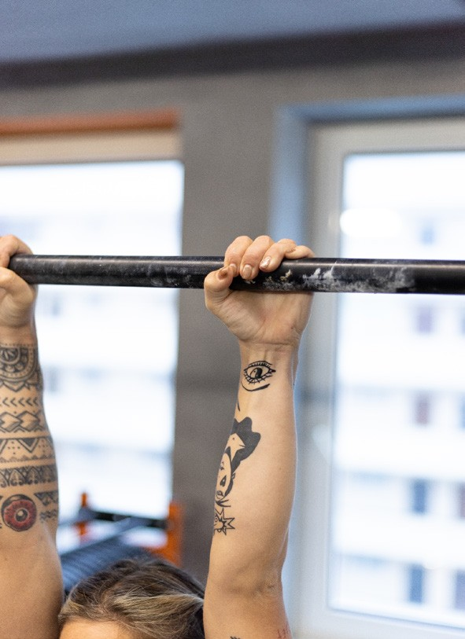

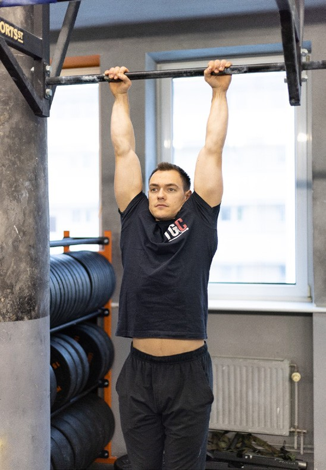


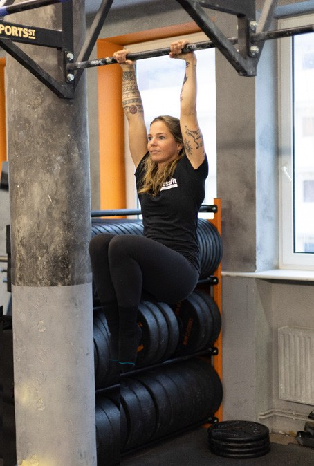


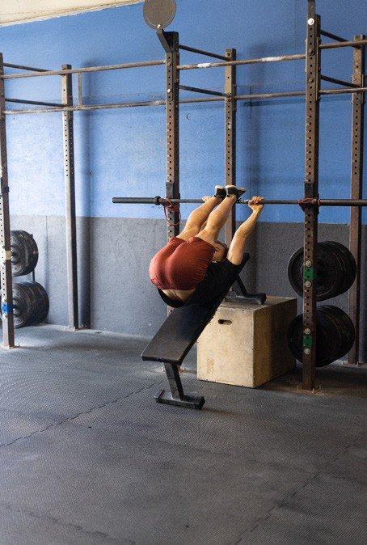


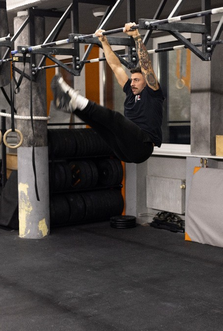


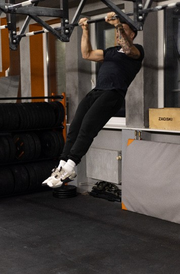


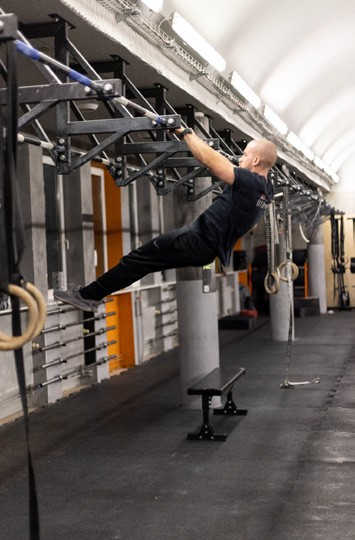


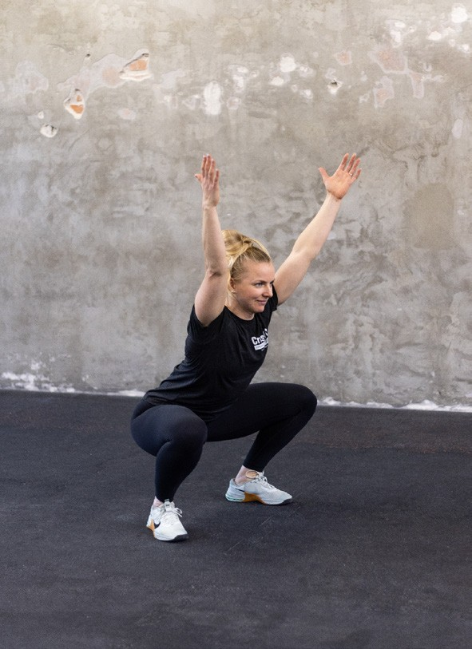
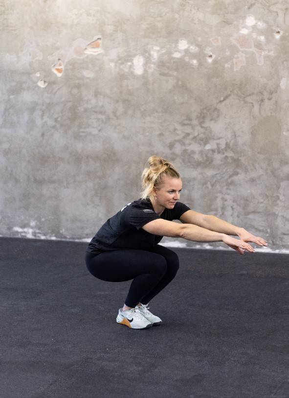


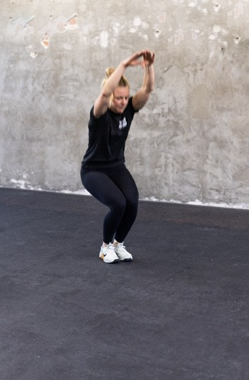


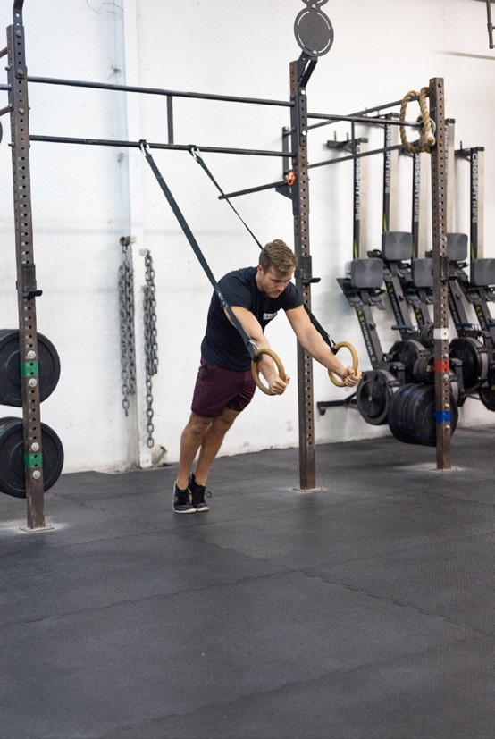


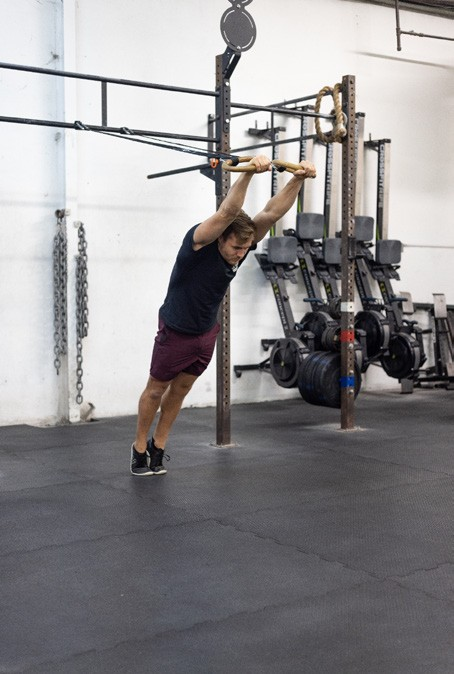


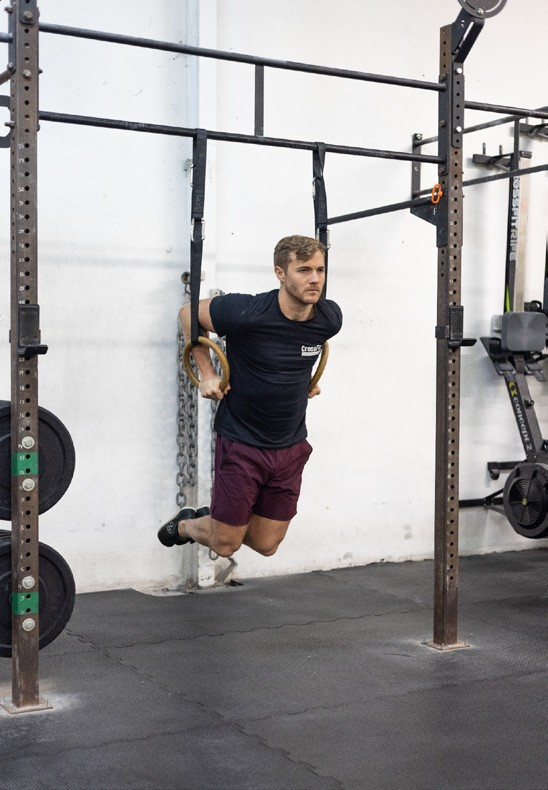
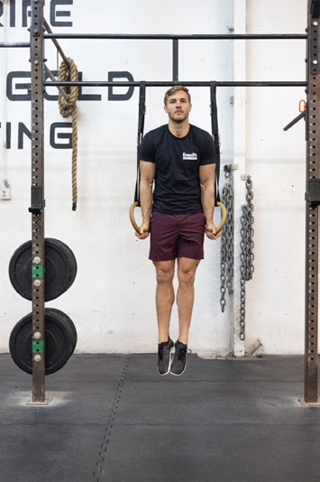


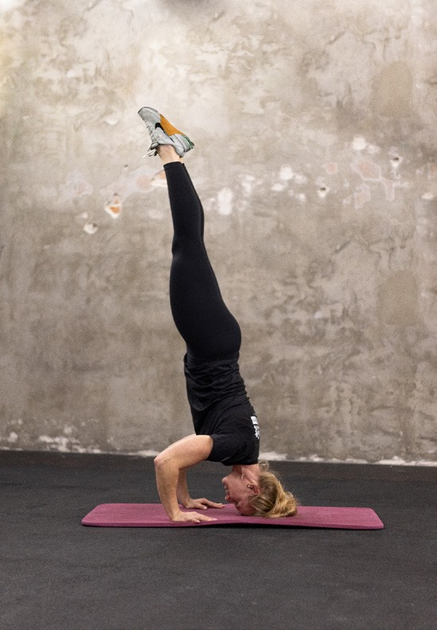


Kapitel 8
Im nächsten Abschnitt erhältst du einen Einblick in die Trainingsprogrammierung von turnerischen Elementen. Im Seminar werden wir, während der Programming Lecture noch weiter in die Tiefe gehen.
Bei der linearen Progression handelt es sich um eine Trainingsmethode, bei der der Schwierigkeitsgrad oder das Volumen einer Übung im Laufe der Zeit schrittweise erhöht wird. So fördern wir den Fortschritt und die Anpassung. Diese Methode wird häufig im Krafttraining eingesetzt, um Athleten dabei zu helfen, Kraft und Ausdauer zu entwickeln, die für die Ausführung fortgeschrittener Bewegungen oder Lifts erforderlich sind. Mit Hilfe der linearen Progression im Training können Sportler ihre Kraft und Ausdauer auf sichere und effektive Weise allmählich steigern. Es ist wichtig zu beachten, dass die lineare Progression in Verbindung mit der richtigen Form und Technik eingesetzt werden sollte, um Verletzungen zu vermeiden und optimale Ergebnisse zu erzielen. Wir nutzen diese Methode der linearen Progression gerne für das Training der turnerischen Elemente.
Wir verwenden oft Prozentsätze beim Gewichtheben, aber nur wenige von uns nutzen Prozentsätze im Training von turnerischen Elementen. Beim Turnen ist die Intensität der Prozentsatz der maximalen Wiederholungszahl (RM) oder die TUT (Zeit unter Spannung). Das Gesamtvolumen ist die Gesamtanzahl der Wiederholungen oder die Gesamtzeit unter Spannung.
Im Folgenden erklären wir zwei Beispiele für eine lineare Progression bei der Kraftentwicklung von Strict Pull-Ups. Wir erhöhen um jeweils eine Wiederholung je Trainingseinheit, um eine progressive Überlastung zu erreichen. Wir beginnen diese Progression bspw. mit 40 %. Das erste Beispiel unten basiert auf einem maximalen Satz von 10 strict Pull-Ups mit perfekter Bewegungsbeherrschung.
Beispiel einer linearen Progression mit % der maximalen Wiederholungszahl:
| Woche | Session 1 | Session 2 | Session 3 |
|---|---|---|---|
| 1. | 4-4-4 | 5-4-4 | 5-5-4 |
| 2. | 5-5-5 | 6-5-5 | 6-6-5 |
| 3. | 6-6-6 | 7-6-6 | 7-7-6 |
| 4. | 7-7-7 | 8-7-7 | 8-8-7 |
| 5. | 8-8-8 | 9-8-8 | 9-9-8 |
| 6. | Retest | ||
*Wiederhole diesen Zyklus erneut mit dem neuen RM-Wert des Retests.
Wenn die Kraft für einen Strict Pull-Up noch nicht ausreicht, können wir eine isometrische und eine exzentrische Kontraktion miteinander verbinden und progressiv die Time Under Tension, also die Zeit, die der Muskel unter Spannung ist, steigern, um die Kraft in den nötigen Positionen bzw. der Bewegung aufzubauen.
Ein Beispiel zu dieser Progression siehst Du unten. Die erste Zahl steht für Time Under Tension in der Chin Over Bar Position und die zweite Zahl für die Exzentrik, also das Ablassen aus der Chin Over Bar Position bis in den Hang. Nutze bspw. einen Jumping Pull Up, eine Box oder einen Spotter, der Dir Hilfestellung gibt, um in die Ausgangsposition zu gelangen. Falls die Kraft noch nicht ausreicht, um Position und Bewegung zu kontrollieren, kannst Du über die Hilfestellung mit den Füßen (Toe-Nail-Spot) die Last entsprechend reduzieren.
Beispiel einer linearen Progression mit TUT:
| Woche | Session 1 | Session 2 | Session 3 |
|---|---|---|---|
| 1. | 3/3 - 3/3 - 3/3 | 4/4 - 3/3 - 3/3 | 4/4 - 4/4 - 3/3 |
| 2. | 4/4 - 4/4 - 4/4 | 5/5 - 4/4 - 4/4 | 5/5 - 5/5 - 4/4 |
| 3. | 5/5 - 5/5 - 5/5 | 6/6 - 5/5 - 5/5 | 6/6 - 6/6 - 5/5 |
| Retest | • Nach Absolvieren der 3. Woche, folgt ein Retest. • Sofern die Kraft für einen Strict Pull-Up ausreicht, folge dem Schema aus Woche 4. • Falls die Kraft noch nicht ausreicht, fahre mit der linearen Progression fort. • Wenn du zu Beginn einen Toe-Spot genutzt hast, kannst du nun versuchen, mit dem vollen Körpergewicht zu arbeiten. | ||
| 4. | 1-1-1 | 2-1-1 | 2-2-1 |
| 5. | 2-2-2 | 3-2-2 | 3-3-2 |
| 6. | 3-3-3 | 4-3-3 | 4-4-3 |
*Wenn es gelungen ist, die gesamte Progression, wie vorgeschrieben, zu absolvieren, kann nun das %-Beispiel folgen.
Diese Progression kann mit jedem turnerischen Element durchgeführt werden. Es ist ein sehr einfacher Ansatz und ermöglicht eine leichte Implementierung in ein Box-Programm. Vielleicht ist dies sogar für den Großteil der Mitgliederbasis der beste Ansatz.
Wenn ein individuelles Training zu planen ist, kann mit Volumen, Intensität und Häufigkeit gespielt werden. Für einen ersten Einblick und ein besseres Verständnis findest Du hier ein Beispiel einer linearen Progression mit mehr Variabilität dieser Parameter.
*Das Beispiel basiert auf einem maximalen Satz von 10 strict Pull-Ups mit perfekter Bewegungsausführung.
| Woche | Intensität | Häufigkeit | Volumen |
|---|---|---|---|
| 1. | 3 Sätze mit 40% 4-4-4 | 2 Trainingseinheiten pro Woche | 24 Wiederholungen |
| 2. | 3 Sätze mit 40% 4-4-4 | 2 Trainingseinheiten pro Woche | 24 Wiederholungen |
| 3. | 3 Sätze mit 50% 5-5-5 | 2 Trainingseinheiten pro Woche | 30 Wiederholungen |
| 4. | 3 Sätze mit 50% 5-5-5 | 2 Trainingseinheiten pro Woche | 30 Wiederholungen |
| 5. | 4 Sätze mit 40% 4-4-4-4 | 2 Trainingseinheiten pro Woche | 32 Wiederholungen |
| 6. | 4 Sätze mit 40% 4-4-4-4 | 2 Trainingseinheiten pro Woche | 32 Wiederholungen |
| 7. | 3 Sätze mit 40% 4-4-4 | 3 Trainingseinheiten pro Woche | 36 Wiederholungen |
| 8. | 3 Sätze mit 40% 4-4-4 | 3 Trainingseinheiten pro Woche | 36 Wiederholungen |
Intensität, Umfang und Häufigkeit bleiben immer für zwei Wochen konstant. Für Woche drei und vier haben wir die Intensität erhöht, in Woche fünf und sechs, wird die Intensität reduziert, aber das Volumen erhöht. In der siebten und achten Woche heben wir die Häufigkeit von zwei auf 3 Trainingseinheiten pro Woche an. Die Summe der Wiederholungen je Woche spiegelt den Anstieg des Gesamtvolumens wider. Die gleiche Herangehensweise lässt sich auch auf isometrische und exzentrische Belastungen anwenden.
In den hier genannten Beispielen kann man sehen, dass das Gesamtvolumen als auch die Intensität sehr gering ist. Im Gewichtheben werden wir mit diesem Volumen und Intensität wohl keinen optimalen Trainingsreiz setzen. Im Turnen erzielen wir einen überschwelligen Reiz durch die Anpassung der Time Under Tension und Tempo-Arbeit, jedoch nicht durch Volumen. Gelegentlich kann ein höheres Volumen genutzt werden, einen optimaleren Reiz setzen wir jedoch mit TUT:
Bei den hier genannten Progressionen, arbeiten wir jede Wiederholung in jedem Satz beispielsweise mit 5 Sekunden Hang in Hollow-Position, 3 Sekunden konzentrische Belastung, 3 Sekunden Chin over Bar Hold und 5s in der exzentrischen Phase des Pull-Ups, ab. So trainieren wir Positionen und Perfektion, statt Volumen und Intensität.